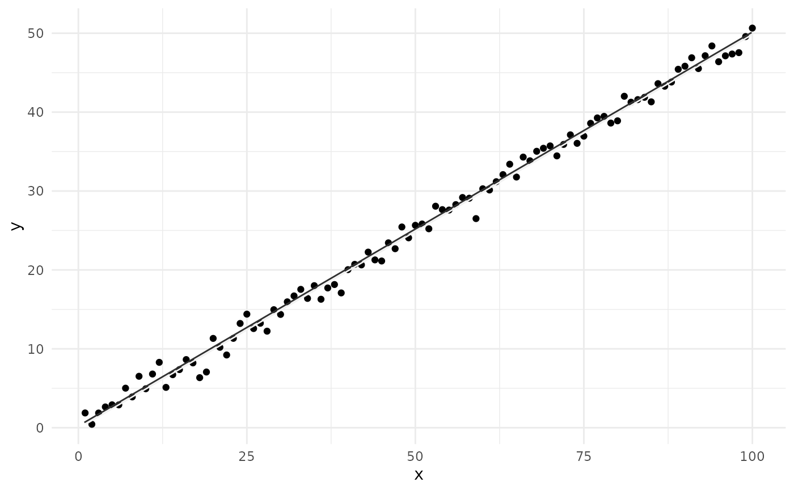
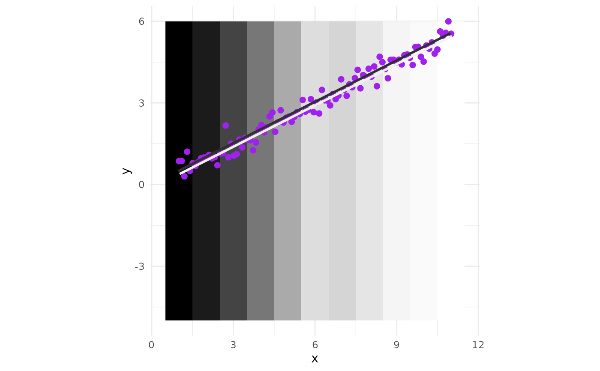

Draws a regression line with perceptually distinct dual-stroke coloring for improved visibility.
Usage
geom_lm_dual(
data,
mapping,
method = "lm",
formula = y ~ x,
base_color = "#777777",
contrast = 4.5,
method_contrast = "WCAG",
...,
linewidth = 1,
show.legend = NA
)Arguments
- data
A data frame containing the variables.
- mapping
Aesthetic mapping, must include
xandy.- method
Regression method to use (default is "lm").
- formula
Model formula (default is
y ~ x).- base_color
Base color to derive the dual-tone pair from.
- contrast
Minimum contrast ratio to aim for (default is 4.5).
- method_contrast
Contrast algorithm to use ("WCAG", "APCA", or "auto").
- ...
Additional parameters passed to
geom_segment_dual().- linewidth
Total visual line thickness in mm (both side strokes together).
- show.legend
Whether to show legend.
Examples
library(ggplot2)
# Simple test with linear trend
set.seed(42)
df <- data.frame(x = 1:100, y = 0.5 * (1:100) + rnorm(100))
ggplot(df, aes(x, y)) +
geom_point() +
geom_lm_dual(data = df, mapping = aes(x = x, y = y)) +
theme_minimal()

# Over grayscale tiles
x <- seq(1, 11, length.out = 100)
y <- 0.5 * x + rnorm(100, 0, 0.3)
df1 <- data.frame(x = x, y = y)
# Tile fill definitions
fill_colors <- data.frame(
x = 1:11,
fill = c("#000000", "#1b1b1b", "#444444", "#777777", "#aaaaaa",
"#dddddd", "#D5D5D5", "#E5E5E5", "#F5F5F5", "#FAFAFA", "#FFFFFF")
)
# Expand tile grid and join with fill colors
tiles <- expand.grid(x = 1:11, y = seq(0, 1, length.out = 100)) |>
merge(fill_colors, by = "x")
ggplot() +
geom_tile(
data = tiles, aes(x = x, y = y, fill = fill),
width = 1, height = 10
) +
scale_fill_identity() +
geom_point(
data = df1, aes(x = x, y = y),
colour = "purple", size = 2
) +
## Uncomment to use points with frames:
# geom_point(
# data = df1, aes(x = x, y = y),
# shape = 21, colour = "white", fill = "black", size = 3
# ) +
geom_lm_dual(
data = df1, mapping = aes(x = x, y = y),
linewidth = 2
) +
coord_fixed() +
theme_minimal()
